Chapter 5 Legends
The heatmaps and simple annotations automatically generate legends which are
put one the right side of the heatmap. By default there is no legend for
complex annotations, but they can be constructed and added manually (Section
5.5). All legends are internally constructed by
Legend() constructor. In later sections, we first introduce the settings for
continuous legends and discrete legends, then we will discuss how to configure
the legends associated with the heatmaps and annotations, and how to add new
legends to the plot.
All the legends (no matter a single legend or a pack of legends) all belong to
the Legends class. The class only has one slot grob which is the real
grid::grob object or the grid::gTree object that records how to draw the
graphics. The wrapping of the Legends class and the methods designed for the
class make legends as single objects and can be drawn like points with
specifying the positions on the viewport.
The legends for heatmaps and annotations can be controlled by
heatmap_legend_param argument in Heatmap(), or annotation_legend_param
argument in HeatmapAnnotation(). Most of the parameters in Legend()
function can be directly set in the two arguments with the same parameter
name. The details of setting heatmap legends and annotation legends
parameters are introduced in Section 5.4.
5.1 Continuous legends
Since most of heatmaps contain continuous values, we first introduce the settings for the continuous legend.
Continuous legend needs a color mapping function which should be generated by
circlize::colorRamp2(). In the heatmap legends and annotation legends that
are automatically generated, the color mapping functions are passed by the
col argument from Heatmap() or HeatmapAnnotation() function, while if
you construct a self-defined legend, you need to provide the color mapping
function.
The break values provided in the color mapping function (e.g. c(0, 0.5, 1)
in following example) will not exactly be the same as the break values in the
legends). The finally break values presented in the legend are internally
adjusted to make the numbers of labels close to 5 or 6.
First we show the default style of a vertical continuous legend:
library(circlize)
col_fun = colorRamp2(c(0, 0.5, 1), c("blue", "white", "red"))
lgd = Legend(col_fun = col_fun, title = "foo")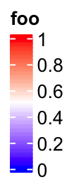
lgd is a Legends class object. The size of the legend can be obtained by
ComplexHeatmap:::width() and ComplexHeatmap:::height() function.
ComplexHeatmap:::width(lgd)## [1] 9.90361111111111mmComplexHeatmap:::height(lgd)## [1] 30.2744052165491mmThe legend is actually a packed graphic object composed of rectangles, lines
and texts. It can be added to the plot by draw() function. In
ComplexHeatmap pacakge, you don’t need to use draw() directly on legend
objects, but it might be useful if you use the legend objects in other places.
pushViewport(viewport(width = 0.9, height = 0.9))
grid.rect() # border
draw(lgd, x = unit(1, "cm"), y = unit(1, "cm"), just = c("left", "bottom"))
draw(lgd, x = unit(0.5, "npc"), y = unit(0.5, "npc"))
draw(lgd, x = unit(1, "npc"), y = unit(1, "npc"), just = c("right", "top"))
popViewport()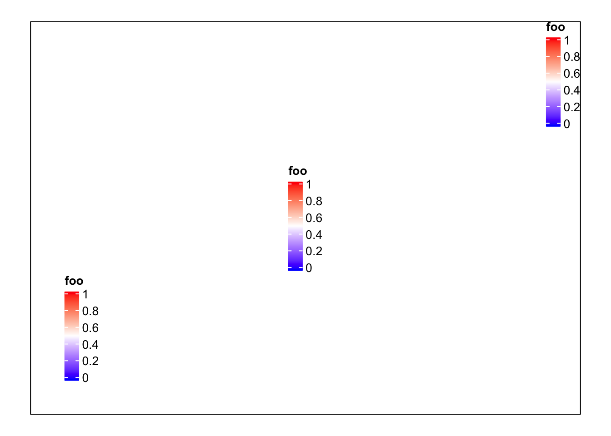
If you only want to configure the legends generated by heatmaps or
annotations, you don’t need to construct the Legends object by your own.
The parameters introduced later can be directly used to customize the
legends by heatmap_legend_param argument in Heatmap() and
annotation_legend_param argument in HeatmapAnnotation() (introduced in
Section
5.4). It is still nice to see how these parameters change the
styles of the legend in following examples. Following is a simple example
showing how to configure legends in the heatmap and heatmap annotation.
Heatmap(matrix(rnorm(100), 10),
heatmap_legend_param = list(
title = "rnorm", at = c(-2, 0, 2),
labels = c("neg_two", "zero", "pos_two")
),
top_annotation = HeatmapAnnotation(
foo = 1:10,
annotation_legend_param = list(foo = list(title = "foo_top_anno"))
))
In following examples, we only show how to construct the legend object, while
not show the code which draws the legends. Only remember you can use draw()
function on the Legends object to draw the single legend on the plot.
For continuous legend, you can manually adjust the break values in the legend
by setting at. Note the height is automatically adjusted.
lgd = Legend(col_fun = col_fun, title = "foo", at = c(0, 0.25, 0.5, 0.75, 1))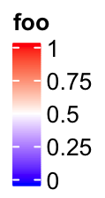
The labels corresponding to the break values are set by labels.
lgd = Legend(col_fun = col_fun, title = "foo", at = c(0, 0.5, 1),
labels = c("low", "median", "high"))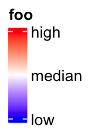
The height of the vertical continous legend is set by legend_height.
legend_height can only be set for the veritcal continous legend and the
value is the height of the legend body (excluding the legend title).
lgd = Legend(col_fun = col_fun, title = "foo", legend_height = unit(6, "cm"))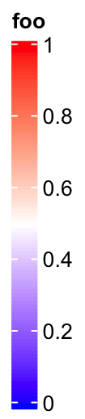
If it is a vertical legend, grid_width controls the widths of the legend
body. grid_width is originally designed for the discrete legends where the
each level in the legend is a grid, but here we use the same name for the
parameter that controls the width of the legend.
lgd = Legend(col_fun = col_fun, title = "foo", grid_width = unit(1, "cm"))
The graphic parameters for the labels are controlled by labels_gp.
lgd = Legend(col_fun = col_fun, title = "foo", labels_gp = gpar(col = "red", font = 3))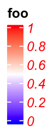
The border of the legend as well as the ticks for the break values are
controlled by border. The value of border can be logical or a string of
color.
lgd = Legend(col_fun = col_fun, title = "foo", border = "red")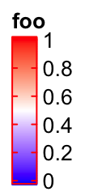
title_position controls the position of titles. For vertical legends, the
value should be one of topleft, topcenter, lefttop-rot and
leftcenter-rot. Following two plots show the effect of lefttop-rot title
and leftcenter-rot title.
lgd = Legend(col_fun = col_fun, title = "foooooooo", title_position = "lefttop-rot",
legend_height = unit(4, "cm"))
lgd = Legend(col_fun = col_fun, title = "foooooooo", title_position = "leftcenter-rot",
legend_height = unit(4, "cm"))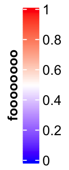
Legend titles and labels can be set as mathematical formulas.
lgd = Legend(col_fun = col_fun, title = expression(hat(beta) == (X^t * X)^{-1} * X^t * y),
at = c(0, 0.25, 0.5, 0.75, 1), labels = expression(alpha, beta, gamma, delta, epsilon))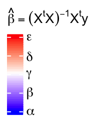
More complicated texts can be added by using the gridtext package (Section 10.3.5).
lgd = Legend(col_fun = col_fun,
title = gt_render("<span style='color:orange'>**Legend title**</span>"),
title_gp = gpar(box_fill = "grey"),
at = c(-3, 0, 3),
labels = gt_render(c("<span style='color:blue'>*negative*</span> three", "zero",
"<span style='color:red'>*positive*</span> three"))
)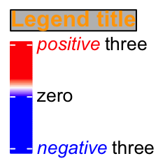
Settings for horizontal continuous legends are almost the same as vertical
legends, except that now legend_width controls the width of the legend, and
the title position can only be one of topcenter, topleft, lefttop and
leftcenter.
The default style for horizontal legend:
lgd = Legend(col_fun = col_fun, title = "foo", direction = "horizontal")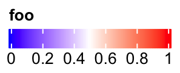
Manually set at:
lgd = Legend(col_fun = col_fun, title = "foo", at = c(0, 0.25, 0.5, 0.75, 1),
direction = "horizontal")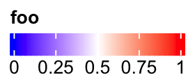
Manually set labels:
lgd = Legend(col_fun = col_fun, title = "foo", at = c(0, 0.5, 1),
labels = c("low", "median", "high"), direction = "horizontal")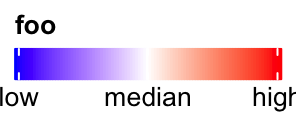
Set legend_width:
lgd = Legend(col_fun = col_fun, title = "foo", legend_width = unit(6, "cm"),
direction = "horizontal")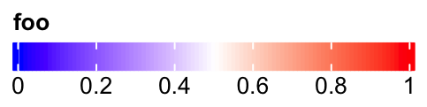
Set graphic parameters for labels:
lgd = Legend(col_fun = col_fun, title = "foo", labels_gp = gpar(col = "red", font = 3),
direction = "horizontal")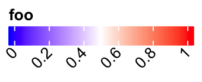
Set rotations of labels.
lgd = Legend(col_fun = col_fun, title = "foo", labels_rot = 45,
direction = "horizontal")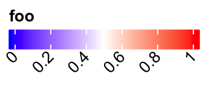
Title can be set as topleft, topcenter or lefttop and leftcenter.
lgd = Legend(col_fun = col_fun, title = "foooooooo", direction = "horizontal",
title_position = "topcenter")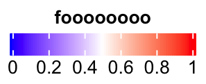
lgd = Legend(col_fun = col_fun, title = "foooooooo", direction = "horizontal",
title_position = "lefttop")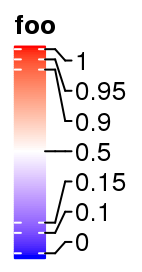
In examples we showed above, the intervals between every two break values are
equal. Actually at can also be set as break values with uneuqal intervals.
In this scenario, the ticks on the legend are still at the original places
while the corresponding texts are shifted to get rid of overlapping. Then,
there are lines connecting the ticks and the labels.
lgd = Legend(col_fun = col_fun, title = "foo", at = c(0, 0.1, 0.15, 0.5, 0.9, 0.95, 1))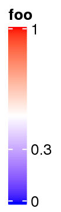
If the labels do not need to be adjusted, they are still at the original places.
lgd = Legend(col_fun = col_fun, title = "foo", at = c(0, 0.3, 1),
legend_height = unit(4, "cm"))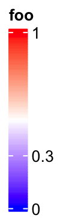
It is similar for the horizontal legends:
lgd = Legend(col_fun = col_fun, title = "foo", at = c(0, 0.1, 0.15, 0.5, 0.9, 0.95, 1),
direction = "horizontal")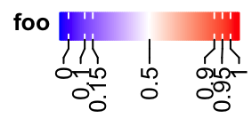
Set rotations of labels to 90 degree.
lgd = Legend(col_fun = col_fun, title = "foo", at = c(0, 0.1, 0.15, 0.5, 0.9, 0.95, 1),
direction = "horizontal", title_position = "lefttop", labels_rot = 90)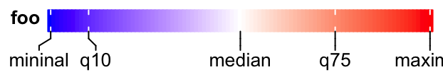
When the position of title is set to lefttop, the area below the title will
also be taken into account when calculating the adjusted positions of labels.
lgd = Legend(col_fun = col_fun, title = "foo", at = c(0, 0.1, 0.5, 0.75, 1),
labels = c("mininal", "q10", "median", "q75", "maximal"),
direction = "horizontal", title_position = "lefttop")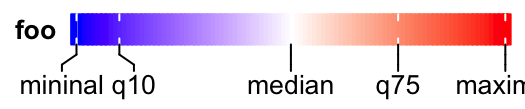
If at is set in the decreasing order, the legend is reversed, i.e. the smallest value
is on the top of the legend.
lgd = Legend(col_fun = col_fun, title = "foo", at = c(1, 0.8, 0.6, 0.4, 0.2, 0))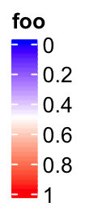
Most continuous legends have legend breaks with equal distance, which I mean, e.g. the distance between the first and the second breaks are the same as the distance between the second and the third breaks. However, there are still special cases where users want to set legend breaks with unequal distances.
In the following example, the color mapping function col_fun_prop visualizes
proportion values with breaks in c(0, 0.05, 0.1, 0.5, 1). The legend breaks
with unequal distance might reflect the different importance of the values in c(0, 1).
For example, maybe we want to see more details in the interval c(0, 0.1).
Following is the default style of the legend where the breaks are selected from 0 to 1 with equal distance.
col_fun_prop = colorRamp2(c(0, 0.05, 0.1, 0.5, 1),
c("green", "white", "red", "black", "blue"))
lgd = Legend(col_fun = col_fun_prop, title = "Prop")You cann’t see the details in the interval c(0, 0.1), right? This also reminds us that
the breaks set in colorRamp2() only defines the color mapping while not determine
the breaks in the legend.
If we manually select the break values, the color bar keeps the same. The labels are shifted and lines connect them to the original positions. In this case, the distance in the color bar is still proportional to the real difference in the break values, i.e., the distance between 0.5 and 1 is five times longer than 0 and 0.1.
col_fun_prop = colorRamp2(c(0, 0.05, 0.1, 0.5, 1),
c("green", "white", "red", "black", "blue"))
lgd = Legend(col_fun = col_fun_prop, title = "Prop",
at = c(0, 0.05, 0.1, 0.5, 1))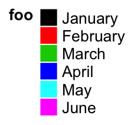
From version 2.7.1, Legend() function has a new argument break_dist that
controls the distance between two neighbouring break values in the legend.
It might be confusing, but from here, when I mention “break distance,” it
always means the visual distance in the legend.
The value of break_dist should have length either one which means all break
values have equal distance in the legend, or length(at) - 1.
lgd = Legend(col_fun = col_fun_prop, title = "Prop", break_dist = 1)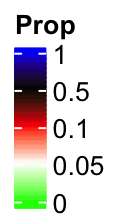
And in the following example, the top two break intervals are three times longer than the bottom two intervals.
lgd = Legend(col_fun = col_fun_prop, title = "Prop", break_dist = c(1, 1, 3, 3))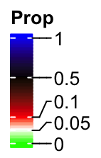
If we increase the legend height by legend_height argument, there will be enough space
for the labels and their positions are not adjusted any more.
lgd = Legend(col_fun = col_fun_prop, title = "Prop", break_dist = c(1, 1, 3, 3),
legend_height = unit(4, "cm"))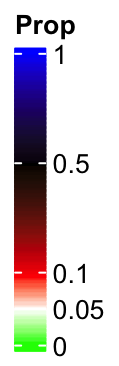
Imaging following user case, we want to use one color scheme for the values in
c(0, 0.1) and a second color schema for the values in c(0.1, 1), maybe for
the reason that we want to emphasize the two intervals are very different. The
color mapping can be defined as:
col_fun2 = colorRamp2(c(0, 0.1, 0.1+1e-6, 1), c("white", "red", "yellow", "blue"))So here I just added a tiny shift (1e-6) to 0.1 and set it as the lower bound for the
second color scheme. The legend looks like:
lgd = Legend(col_fun = col_fun2, title = "Prop", at = c(0, 0.05, 0.1, 0.5, 1),
break_dist = c(1, 1, 3, 3), legend_height = unit(4, "cm"))
Now you can see the colors are not changed smoothly from 0 to 1 and there are two disticnt color schemes.
5.2 Discrete legends
Discrete legends are used for discrete color mappings. The continuous color mapping can also be degenerated as discrete color mapping by only providing the colors and the break values.
You can either specify at or labels, but most probably you specify
labels. The colors should be specified by legend_gp.
lgd = Legend(at = 1:6, title = "foo", legend_gp = gpar(fill = 1:6))
lgd = Legend(labels = month.name[1:6], title = "foo", legend_gp = gpar(fill = 1:6))
The discrete legend for continuous color mapping:
at = seq(0, 1, by = 0.2)
lgd = Legend(at = at, title = "foo", legend_gp = gpar(fill = col_fun(at)))
The position of title:
lgd = Legend(labels = month.name[1:6], title = "foo", legend_gp = gpar(fill = 1:6),
title_position = "lefttop")
lgd = Legend(labels = month.name[1:6], title = "foo", legend_gp = gpar(fill = 1:6),
title_position = "leftcenter-rot")
The size of grids are controlled by grid_width and grid_height.
lgd = Legend(at = 1:6, legend_gp = gpar(fill = 1:6), title = "foo",
grid_height = unit(1, "cm"), grid_width = unit(5, "mm"))
The graphic parameters of labels are controlled by labels_gp.
lgd = Legend(labels = month.name[1:6], legend_gp = gpar(fill = 1:6), title = "foo",
labels_gp = gpar(col = "red", fontsize = 14))
The graphic parameters of the title are controlled by title_gp.
lgd = Legend(labels = month.name[1:6], legend_gp = gpar(fill = 1:6), title = "foo",
title_gp = gpar(col = "red", fontsize = 14))
Title and labels are be complicated texts by integrating gridtext package (Section 10.3.5):
lgd = Legend(
title = gt_render("<span style='color:orange'>**Legend title**</span>"),
title_gp = gpar(box_fill = "grey"),
at = c(-3, 0, 3),
labels = gt_render(c("**negative** three", "*zero*", "**positive** three")),
legend_gp = gpar(fill = 1:3)
)
Borders of grids are controlled by border.
lgd = Legend(labels = month.name[1:6], legend_gp = gpar(fill = 1:6), title = "foo",
border = "red")
One important thing for the discrete legend is you can arrange the grids into
multiple rows or/and columns. If ncol is set to a number, the grids are
arranged into ncol columns.
lgd = Legend(labels = month.name[1:10], legend_gp = gpar(fill = 1:10),
title = "foo", ncol = 3)
Still the title position is calculated based on the multiplt-column legend.
lgd = Legend(labels = month.name[1:10], legend_gp = gpar(fill = 1:10), title = "foo",
ncol = 3, title_position = "topcenter")
You can choose to list the legend levels by rows by setting by_row = TRUE.
lgd = Legend(labels = month.name[1:10], legend_gp = gpar(fill = 1:10), title = "foo",
ncol = 3, by_row = TRUE)
The gaps between two columns are controlled by gap or column_gap. These two arguments
are treated the same.
lgd = Legend(labels = month.name[1:10], legend_gp = gpar(fill = 1:10), title = "foo",
ncol = 3, gap = unit(1, "cm"))
The gaps between rows are controlled by row_gap.
lgd = Legend(labels = month.name[1:10], legend_gp = gpar(fill = 1:10), title = "foo",
ncol = 3, row_gap = unit(5, "mm"))
Instead of ncol, you can also specify the layout by nrow. Note you cannot
use ncol and nrow at a same time.
lgd = Legend(labels = month.name[1:10], legend_gp = gpar(fill = 1:10),
title = "foo", nrow = 3)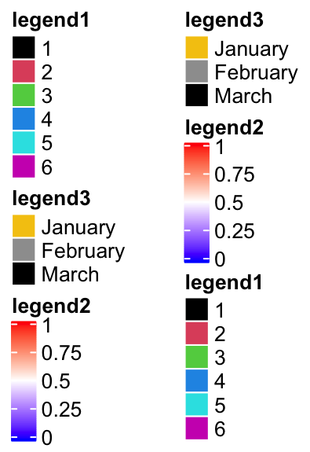
One extreme case is when all levels are put in one row and the title are rotated by 90 degree. The height of the legend will be the height of the rotated title.
lgd = Legend(labels = month.name[1:6], legend_gp = gpar(fill = 1:6), title = "foooooo",
nrow = 1, title_position = "lefttop-rot")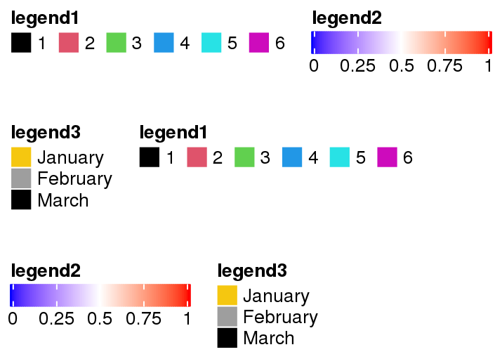
Following style a lot of people might like:
lgd = Legend(labels = month.name[1:6], legend_gp = gpar(fill = 1:6), title = "foooooo",
nrow = 1, title_position = "leftcenter")
Legend() also supports to use simple graphics (e.g. points, lines, boxplots) as
legends. type argument can be specified as points or p that you can use number
for pch or single-letter for pch.
lgd = Legend(labels = month.name[1:6], title = "foo", type = "points",
pch = 1:6, legend_gp = gpar(col = 1:6), background = "#FF8080")
lgd = Legend(labels = month.name[1:6], title = "foo", type = "points",
pch = letters[1:6], legend_gp = gpar(col = 1:6), background = "white")
Or set type = "lines"/type = "l" to use lines as legend:
lgd = Legend(labels = month.name[1:6], title = "foo", type = "lines",
legend_gp = gpar(col = 1:6, lty = 1:6), grid_width = unit(1, "cm"))
Or set type = "boxplot"/type = "box" to use boxes as legends:
lgd = Legend(labels = month.name[1:6], title = "foo", type = "boxplot",
legend_gp = gpar(fill = 1:6))
When pch is an integer number, the numbers in 26:28 correspond to following symbols:
lgd = Legend(labels = paste0("pch = ", 26:28), type = "points", pch = 26:28)
In all examples showed above, the labels are single lines. Multiple-line labels are also supported. As shown in the following example, legend grids for multiple-line labels are automatically enlongated.
lgd = Legend(labels = c("aaaaa\naaaaa", "bbbbb\nbbbbb", "c", "d"),
legend_gp = gpar(fill = 1:4))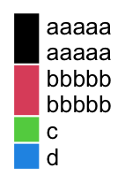
If the legend is arranged in multiple rows or columns, the sizes of legend grids are adjusted to the label with the most number of lines.
lgd = Legend(labels = c("aaaaa\naaaaa", "c", "d", "bbbbb\nbbbbb"),
legend_gp = gpar(fill = 1:4), nrow = 2)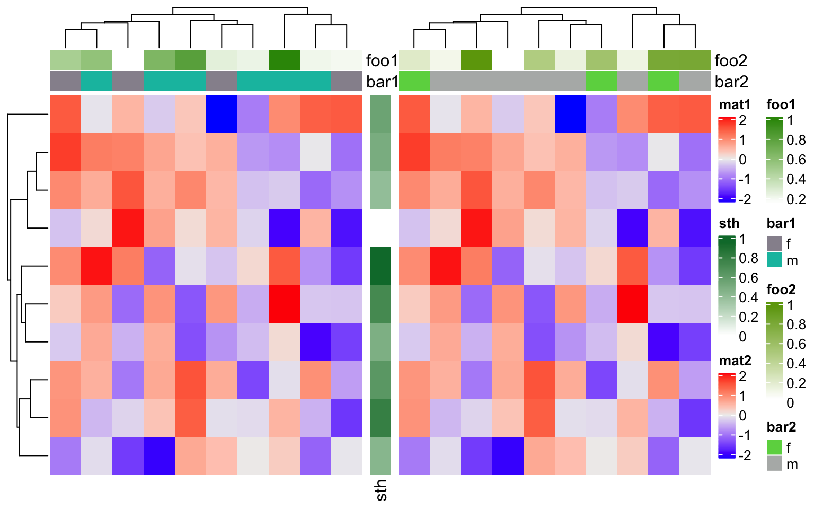
The last useful argument graphics can be used to self-define the legend
graphics. The value for graphics should be a list of functions with four
arguments: x and y: the center of the legend grid, w and h: the width
and height of the legend grid. Length of graphics should be the same as at
or labels. If graphics is a named list where the names correspond to
labels, then the order of the list of graphics is automatically adjusted.
lgd = Legend(labels = letters[1:4],
graphics = list(
function(x, y, w, h) grid.rect(x, y, w*0.33, h, gp = gpar(fill = "red")),
function(x, y, w, h) grid.rect(x, y, w, h*0.33, gp = gpar(fill = "blue")),
function(x, y, w, h) grid.text("A", x, y, gp = gpar(col = "darkgreen")),
function(x, y, w, h) grid.points(x, y, gp = gpar(col = "orange"), pch = 16)
))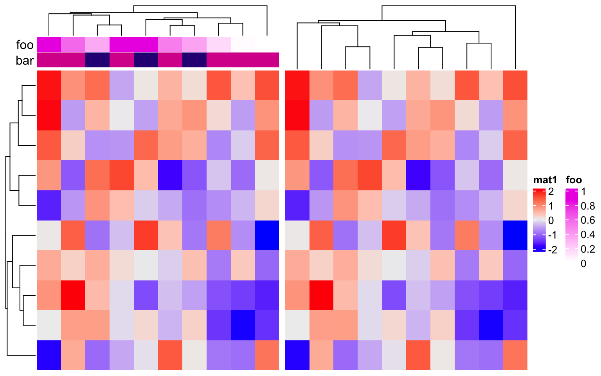
5.3 A list of legends
A list of legends can be constructed or packed as a Legends object where the
individual legends are arranged within a certain layout. The legend list can
be sent to packLegend() separatedly or as a list. The legend can be arranged
either vertically or horizontally. ComplexHeatmap uses packLegend()
internally to arrange multiple legends. Normally you don’t need to manually
control the arrangement of multiple legends, but the following section would
be useful if you want to manually construct a list of legends and apply to
other plots.
lgd1 = Legend(at = 1:6, legend_gp = gpar(fill = 1:6), title = "legend1")
lgd2 = Legend(col_fun = col_fun, title = "legend2", at = c(0, 0.25, 0.5, 0.75, 1))
lgd3 = Legend(labels = month.name[1:3], legend_gp = gpar(fill = 7:9), title = "legend3")
pd = packLegend(lgd1, lgd2, lgd3)
# which is same as
pd = packLegend(list = list(lgd1, lgd2, lgd3))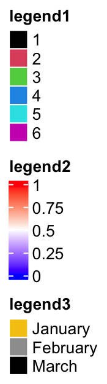
Simillar as single legend, you can draw the packed legends by draw()
function. Also you can get the size of pd by ComplexHeatmap:::width() and
ComplexHeatmap:::height().
ComplexHeatmap:::width(pd)## [1] 19.1675555555556mmComplexHeatmap:::height(pd)## [1] 78.6988333333334mmHorizontally arranging the legends simply by setting direction = "horizontal".
pd = packLegend(lgd1, lgd2, lgd3, direction = "horizontal")
One feature of packLegend() is, e.g. if the packing is vertically and the
sum of the packed legends exceeds the height specified by max_height, it
will be rearragned as mutliple column layout. In following example, the
maximum height is 10cm.
When all the legends are put into multiple columns, column_gap controls the
space between two columns.
pd = packLegend(lgd1, lgd3, lgd2, lgd3, lgd2, lgd1, max_height = unit(10, "cm"),
column_gap = unit(1, "cm"))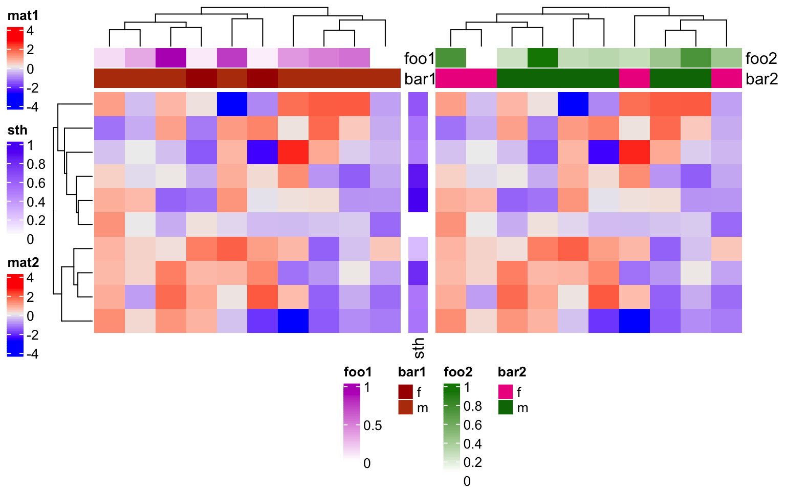
Similar for horizontal packing:
lgd1 = Legend(at = 1:6, legend_gp = gpar(fill = 1:6), title = "legend1",
nr = 1)
lgd2 = Legend(col_fun = col_fun, title = "legend2", at = c(0, 0.25, 0.5, 0.75, 1),
direction = "horizontal")
pd = packLegend(lgd1, lgd2, lgd3, lgd1, lgd2, lgd3, max_width = unit(10, "cm"),
direction = "horizontal", column_gap = unit(5, "mm"), row_gap = unit(1, "cm"))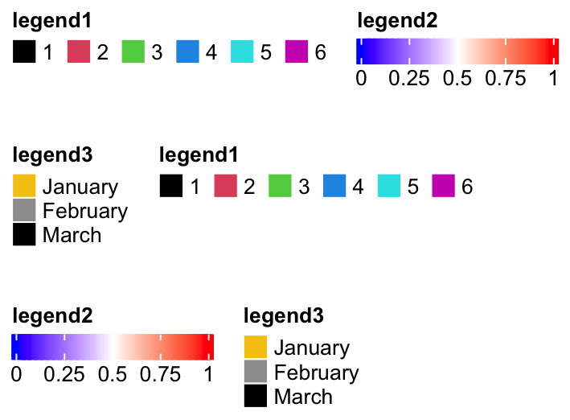
The packed legends pd is also a Legends object, which means you can use
draw() to draw it by specifying the positions.
pd = packLegend(lgd1, lgd2, lgd3, direction = "horizontal")
pushViewport(viewport(width = 0.8, height = 0.8))
grid.rect()
draw(pd, x = unit(1, "cm"), y = unit(1, "cm"), just = c("left", "bottom"))
draw(pd, x = unit(1, "npc"), y = unit(1, "npc"), just = c("right", "top"))
popViewport()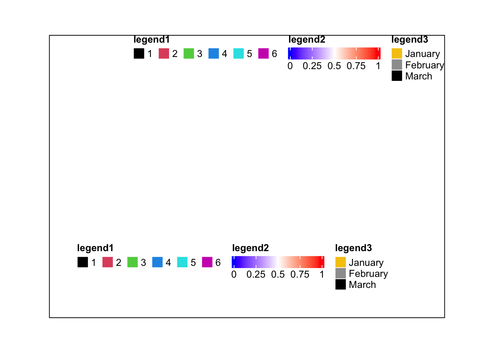
To be mentioned again, packLegend() is used internally to manage the list
of heatmap and annotation legends.
5.4 Heatmap and annotation legends
Settings for heatmap legend are controlled by heatmap_legend_param argument
in Heatmap(). The value for heatmap_legend_param is a list of parameters
which are supported in Legend().
m = matrix(rnorm(100), 10)
Heatmap(m, name = "mat", heatmap_legend_param = list(
at = c(-2, 0, 2),
labels = c("low", "zero", "high"),
title = "Some values",
legend_height = unit(4, "cm"),
title_position = "lefttop-rot"
))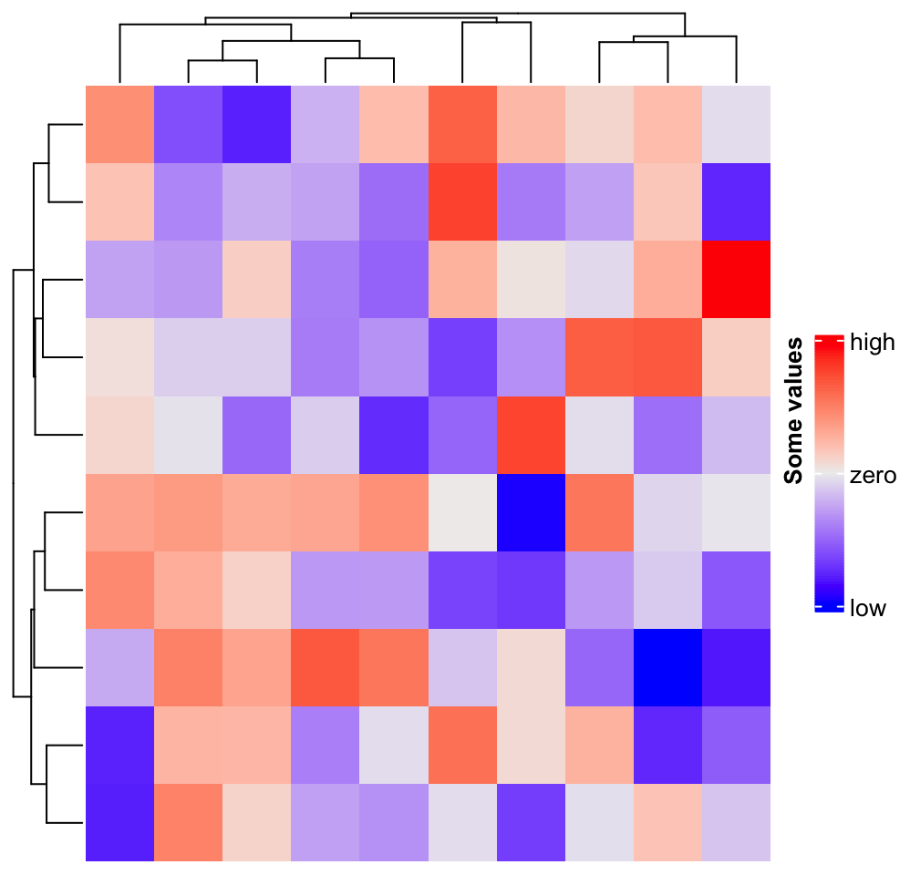
annotation_legend_param controls legends for annotations. Since a
HeatmapAnnotation may contain multiple annotations, the value of
annotation_legend_param is a list of configurations of each annotation.
ha = HeatmapAnnotation(foo = runif(10), bar = sample(c("f", "m"), 10, replace = TRUE),
annotation_legend_param = list(
foo = list(
title = "Fooooooh",
at = c(0, 0.5, 1),
labels = c("zero", "median", "one")
),
bar = list(
title = "Baaaaaaar",
at = c("f", "m"),
labels = c("Female", "Male")
)
))
Heatmap(m, name = "mat", top_annotation = ha)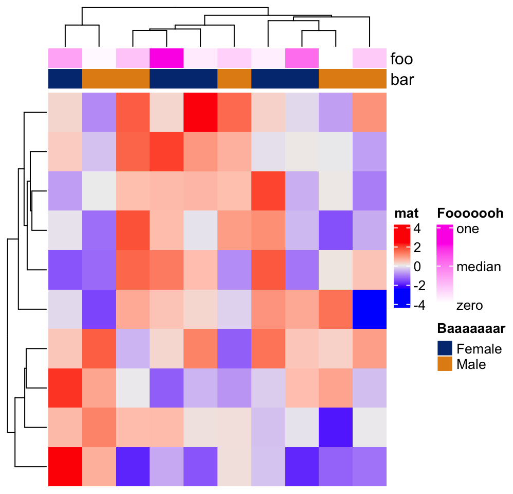
If the heatmaps are concatenated horizontally, all heatmap and row annotation legends are grouped and all column annotation legends ae grouped. The reason we assume the horizontal direction passes the main message of the plot, while the vertical direction provides secondary information.
ha1 = HeatmapAnnotation(foo1 = runif(10), bar1 = sample(c("f", "m"), 10, replace = TRUE))
ha2 = HeatmapAnnotation(foo2 = runif(10), bar2 = sample(c("f", "m"), 10, replace = TRUE))
Heatmap(m, name = "mat1", top_annotation = ha1) +
rowAnnotation(sth = runif(10)) +
Heatmap(m, name = "mat2", top_annotation = ha2)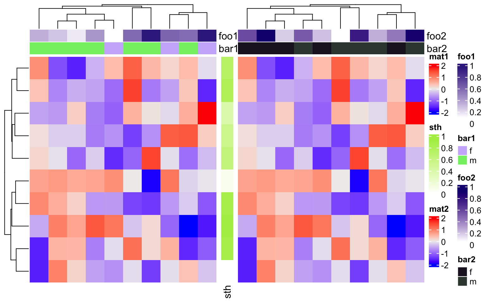
Similarlly, if the heatmaps are concatenated vertically, all heatmaps/column annotations are grouped and legends for all row annotations are grouped.
ha1 = HeatmapAnnotation(foo1 = runif(10), bar1 = sample(c("f", "m"), 10, replace = TRUE),
annotation_name_side = "left")
ha2 = HeatmapAnnotation(foo2 = runif(10), bar2 = sample(c("f", "m"), 10, replace = TRUE))
Heatmap(m, name = "mat1", top_annotation = ha1) %v%
Heatmap(m, name = "mat2", top_annotation = ha2,
right_annotation = rowAnnotation(sth = 1:10))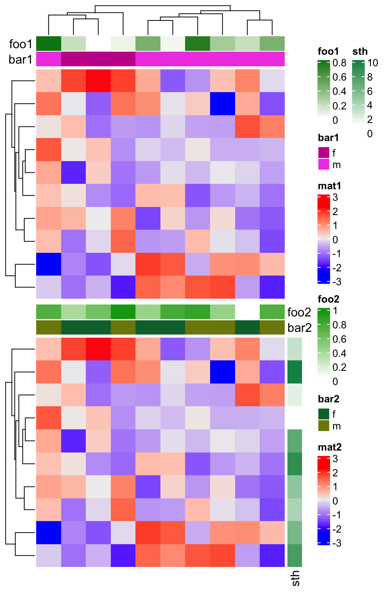
show_legend in HeatmapAnnotation() and show_heatmap_legend in
Heatmap() controls whether show the legends. Note show_legend can be a
single logical value, a logical vector, or a named vector which controls
subset of annotations.
ha = HeatmapAnnotation(foo = runif(10),
bar = sample(c("f", "m"), 10, replace = TRUE),
show_legend = c(TRUE, FALSE), # it can also be show_legend = c(bar = FALSE)
annotation_name_side = "left")
Heatmap(m, name = "mat1", top_annotation = ha) +
Heatmap(m, name = "mat2", show_heatmap_legend = FALSE)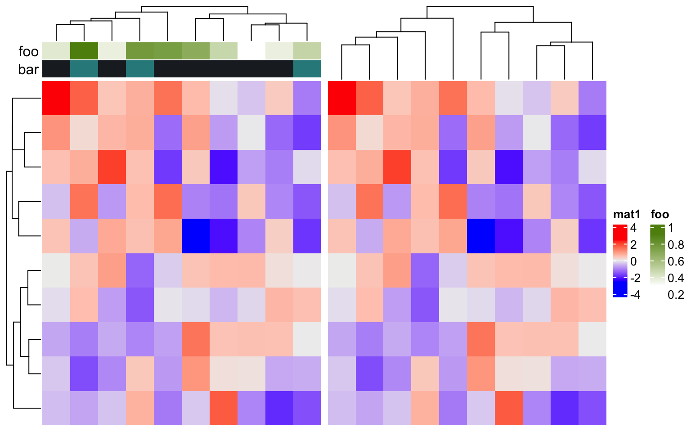
merge_legend in draw() function controlls whether to merge all the legends
into a single group. Normally, when there are many annotations and heatmaps,
the number of legends is always large. In this case, the legends are
automatically arranged into multiple columns (or multiple rows if they are put
at the bottom of the heatmaps) to get rid of being out of the figure page. If
a heatmap has heatmap annotations, the order of putting legends are: legends
for the left annotations, legends for the top annotations, legend of the
heatmap, legends for the bottom annotations and legends for the right
annotations.
ha1 = HeatmapAnnotation(foo1 = runif(10),
bar1 = sample(c("f", "m"), 10, replace = TRUE))
ha2 = rowAnnotation(foo2 = runif(10),
bar2 = sample(letters[1:3], 10, replace = TRUE))
ha3 = rowAnnotation(foo3 = runif(10),
bar3 = sample(month.name[1:3], 10, replace = TRUE))
ht_list = Heatmap(m, name = "mat1", top_annotation = ha1) +
Heatmap(m, name = "mat2", left_annotation = ha2) +
ha3
draw(ht_list, merge_legend = TRUE)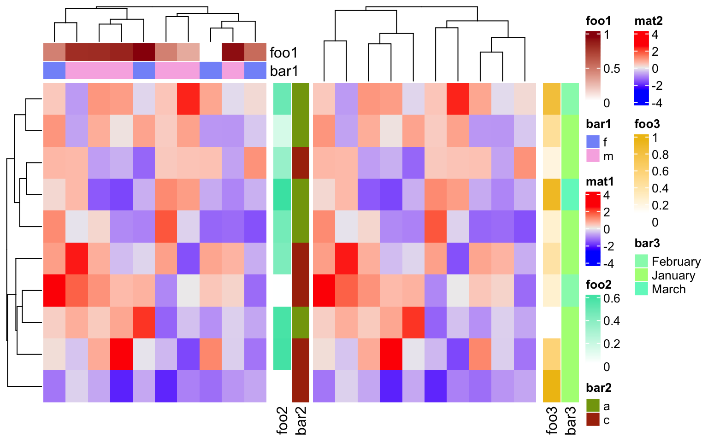
If you want the heatmap legends to be the “pure heatmap legends,” you can set
legend_grouping = "original" to enforce all annotation legends to be put together,
no matter whether they are row annotation legends or column annotation legends.
draw(ht_list, legend_grouping = "original")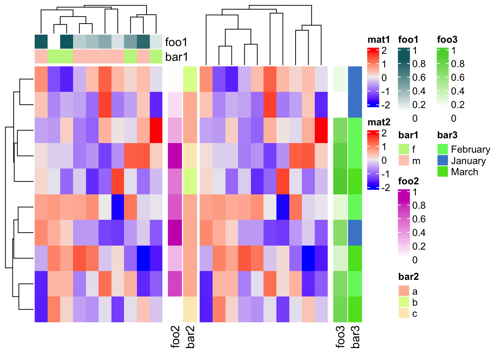
A continuous color mapping can have a
discrete legend by setting color_bar = "discrete", both work for heatmap
legends and annotation legends.
Heatmap(m, name = "mat", heatmap_legend_param = list(color_bar = "discrete"),
top_annotation = HeatmapAnnotation(foo = 1:10,
annotation_legend_param = list(
foo = list(color_bar = "discrete"))))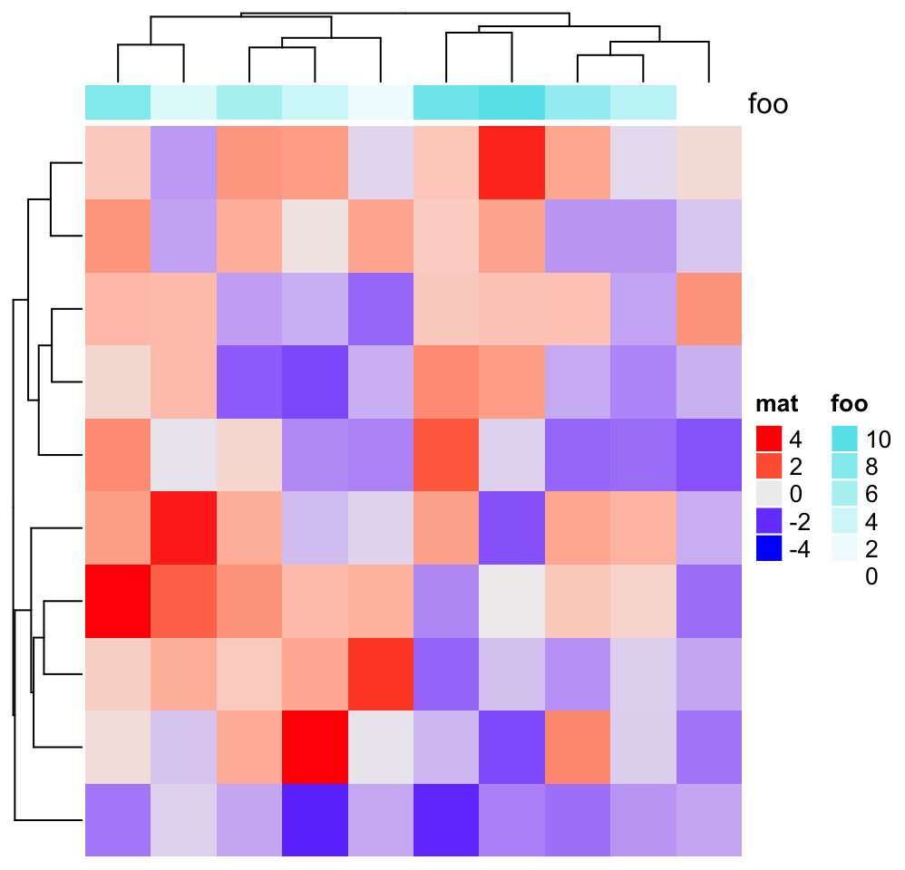
If the value is a character vector, no matter it is an annotation or the one-row/one-column
matrix for the heatmap, the default order of legend labels is sort(unique(value)) and if value
is a factor, the order of legend labels is levels(value). Always remember the order can be
fine-tuned by setting at and labels parameters in heatmap_legend_param/annotation_legend_param
in Heatmap()/HeamtapAnnotation() functions respectively.
chr = sample(letters[1:3], 10, replace = TRUE)
chr## [1] "a" "c" "a" "c" "b" "b" "a" "c" "c" "b"fa1 = factor(chr)
fa2 = factor(chr, levels = c("c", "a", "b"))
Heatmap(m, top_annotation = HeatmapAnnotation(chr = chr, fa1 = fa1, fa2 = fa2, fa3 = fa2,
annotation_legend_param = list(fa3 = list(at = c("b", "c", "a")))))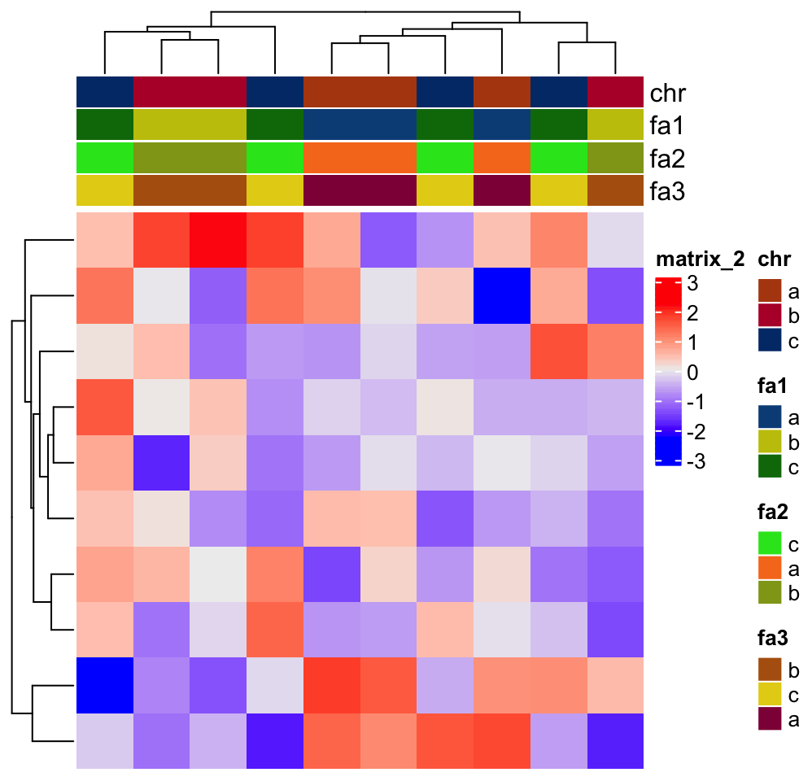
5.5 Add customized legends
The self-defined legends (constructed by Legend()) can be added to the
heatmap legend list by heatmap_legend_list argument in draw() and the
legends for annotations can be added to the annotation legend list by
annotation_legend_list argument.
There is a nice example of adding self-defined legends in Section 11.2, but here we show a simple example.
As mentioned before, only the heatmap and simple annotations can generate legends on the plot. ComplexHeatmap provides many annotation functions, but none of them supports generating legends. In following code, we add a point annotation, a line annotation and a summary annotation to the heatmaps.
ha1 = HeatmapAnnotation(pt = anno_points(1:10, gp = gpar(col = rep(2:3, each = 5)),
height = unit(2, "cm")), show_annotation_name = FALSE)
ha2 = HeatmapAnnotation(ln = anno_lines(cbind(1:10, 10:1), gp = gpar(col = 4:5, lty = 1:2),
height = unit(2, "cm")), show_annotation_name = FALSE)
m = matrix(rnorm(100), 10)
ht_list = Heatmap(m, name = "mat1", top_annotation = ha1) +
Heatmap(m, name = "mat2", top_annotation = ha2) +
Heatmap(m[, 1], name = "mat3",
top_annotation = HeatmapAnnotation(
summary = anno_summary(gp = gpar(fill = 2:3))
), width = unit(1, "cm"))
draw(ht_list, ht_gap = unit(7, "mm"), row_km = 2)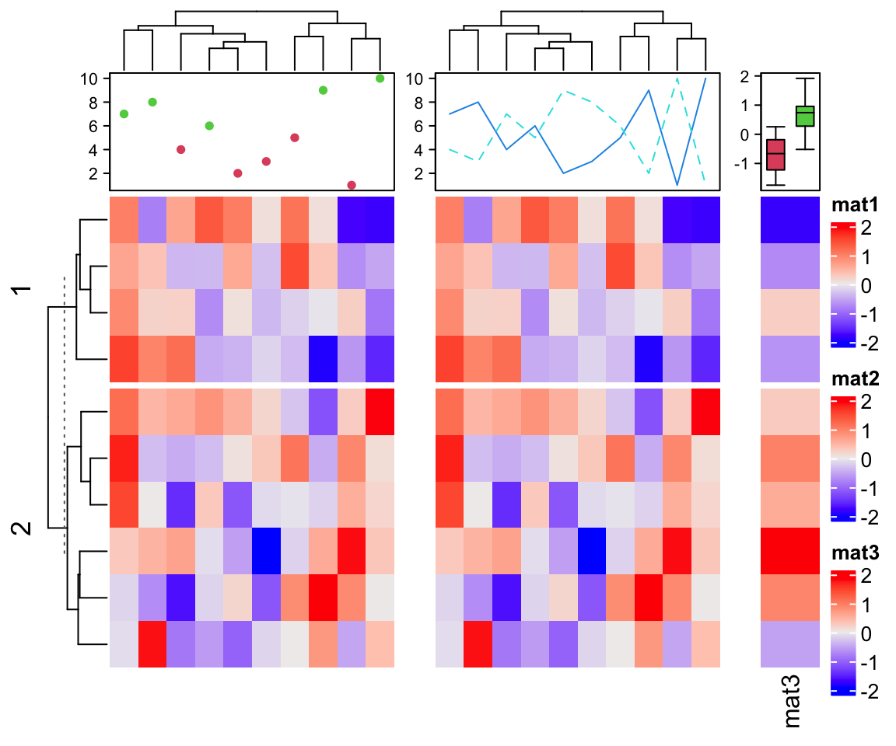
Next we construct legends for the points, the lines and the boxplots.
lgd_list = list(
Legend(labels = c("red", "green"), title = "pt", type = "points", pch = 16,
legend_gp = gpar(col = 2:3)),
Legend(labels = c("darkblue", "lightblue"), title = "ln", type = "lines",
legend_gp = gpar(col = 4:5, lty = 1:2)),
Legend(labels = c("group1", "group2"), title = "km", type = "boxplot",
legend_gp = gpar(fill = 2:3))
)
draw(ht_list, ht_gap = unit(7, "mm"), row_km = 2, annotation_legend_list = lgd_list)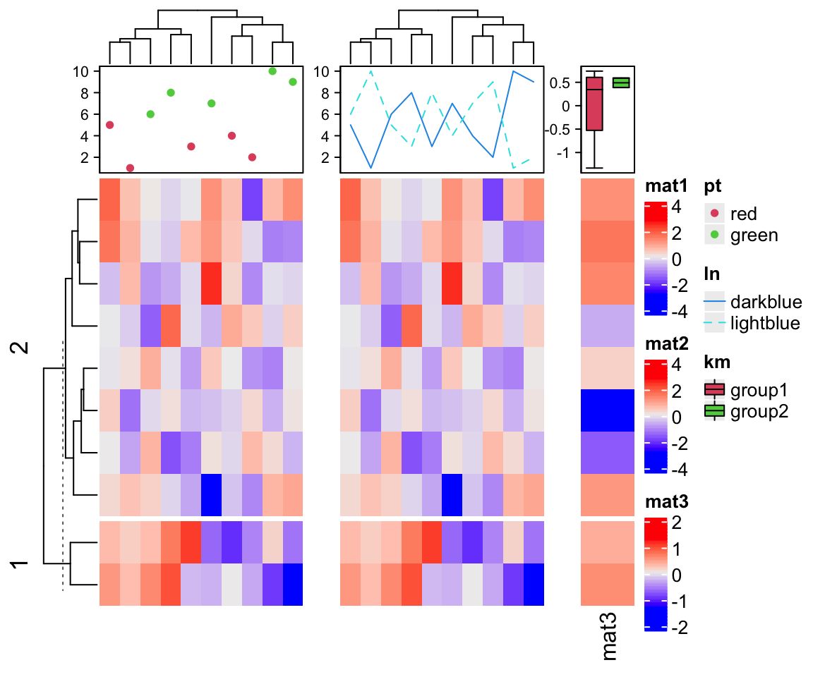
5.6 The side of legends
By default, the heatmap legends and annotation legends are put on the right of
the plot. The side relative to the heatmaps of the two types of legends can be
controlled by heatmap_legend_side and annotation_legend_side arguments in
draw() function. The values that can be set for the two arguments are
left, right, bottom and top.
m = matrix(rnorm(100), 10)
ha1 = HeatmapAnnotation(foo1 = runif(10), bar1 = sample(c("f", "m"), 10, replace = TRUE))
ha2 = HeatmapAnnotation(foo2 = runif(10), bar2 = sample(c("f", "m"), 10, replace = TRUE))
ht_list = Heatmap(m, name = "mat1", top_annotation = ha1) +
rowAnnotation(sth = runif(10)) +
Heatmap(m, name = "mat2", top_annotation = ha2)
draw(ht_list, heatmap_legend_side = "left", annotation_legend_side = "bottom")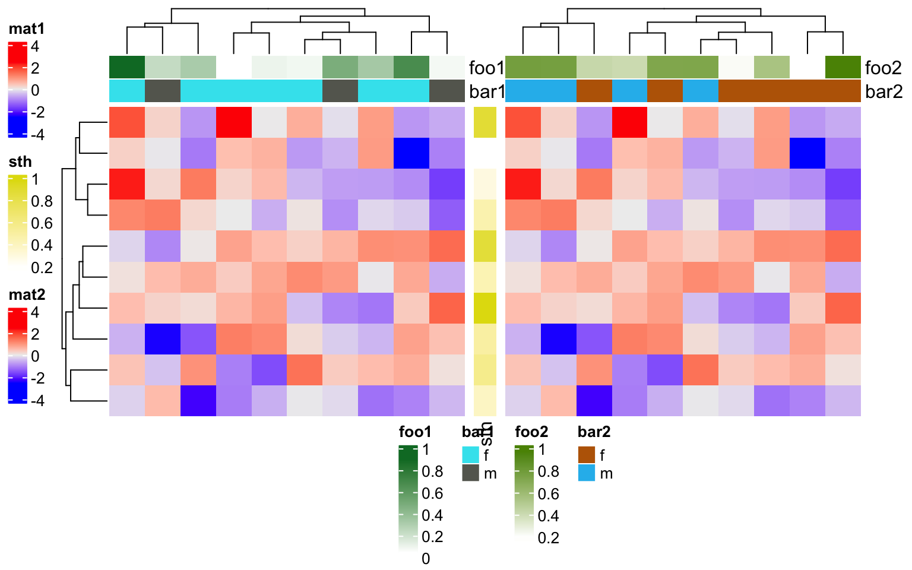
When the legends are put at the bottom or on the top, the legends are arranged
horizontally. We might also want to set every single legend as horizontal
legend, this needs to be set via the heatmap_legend_param and
annotation_legend_param arguments in Heatmap() and HeatmapAnnotation()
functions:
ha1 = HeatmapAnnotation(foo1 = runif(10), bar1 = sample(c("f", "m"), 10, replace = TRUE),
annotation_legend_param = list(
foo1 = list(direction = "horizontal"),
bar1 = list(nrow = 1)))
ha2 = HeatmapAnnotation(foo2 = runif(10), bar2 = sample(c("f", "m"), 10, replace = TRUE),
annotation_legend_param = list(
foo2 = list(direction = "horizontal"),
bar2 = list(nrow = 1)))
ht_list = Heatmap(m, name = "mat1", top_annotation = ha1,
heatmap_legend_param = list(direction = "horizontal")) +
rowAnnotation(sth = runif(10),
annotation_legend_param = list(sth = list(direction = "horizontal"))) +
Heatmap(m, name = "mat2", top_annotation = ha2,
heatmap_legend_param = list(direction = "horizontal"))
draw(ht_list, merge_legend = TRUE, heatmap_legend_side = "bottom",
annotation_legend_side = "bottom")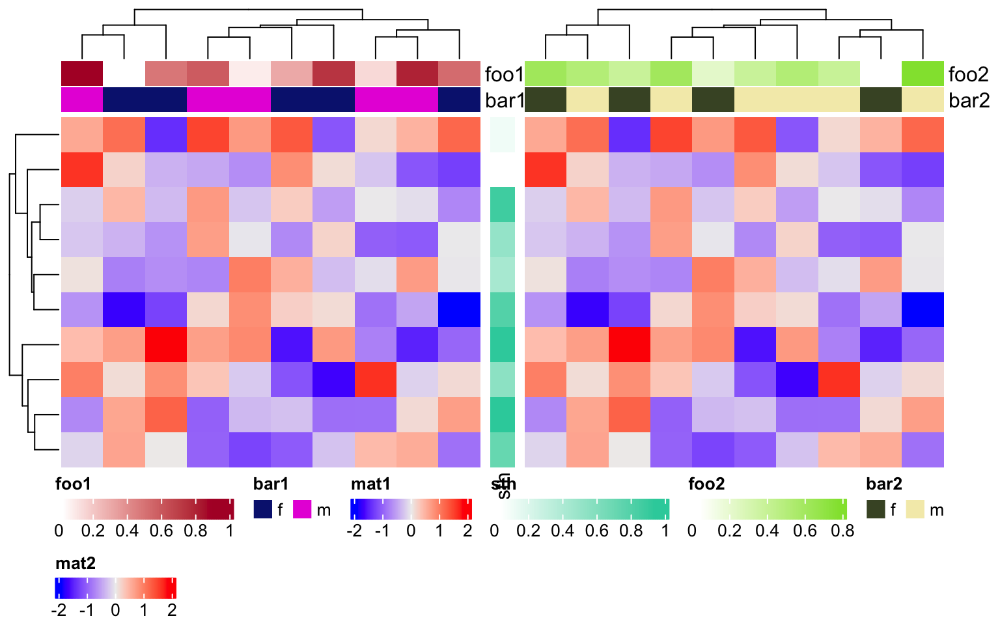